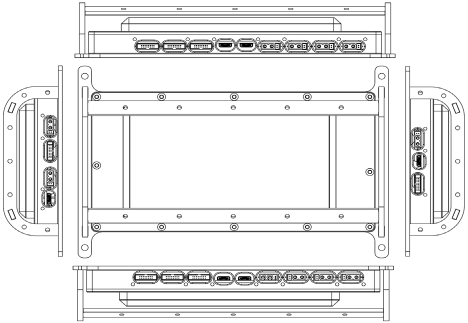
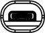
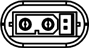
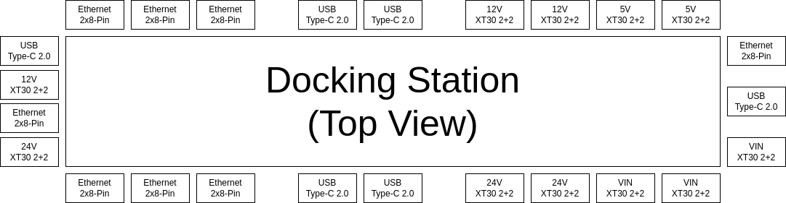

The top of the robot provides breakouts for networking devices, serial devices, and power.
| 
|
|
|
2x 8-pin Gigabit Ethernet Interface |
| 
|
USB Type-C 2.0 Interface |
| 
|
XT30 (2+2) Power Interface |
|
Included in the docking stations are seven Ethernet ports, five USB Type-C ports, and ten power ports.

- 2x8PIN Gigabit Ethernet Interface+12V Power Supply+485/CAN (Pass-through) Interface:
- Total number of interfaces: 8 (2x8PIN waterproof interfaces)
- Gigabit Ethernet: 1 channel is connected to the robot Mini PC, 7 channels are connected to external
- Power Output: 12V x 7 channels, 10A electric current in total (same path as external power supply)
- 485/CAN (Pass-through): 3-Interface CHA channel 485/CAN, 3-interface CHB channel 485/CAN
- Type-C USB2.0 Interface:
- Total number of interfaces: 6 interfaces (Type-C waterproof interface)
- 7-channel USB-HUB: The generatrix is connected to the robot Mini PC. 5 channels are connected to the external; 2 channels are connected to 2 groups of USB, and then transfer to 485 (or CAN) Pass-through modules: CHA/CHB
- Power output: 5V/1A x 5 channels (USB power supply is independent of external power supply)
- XT30(2+2) power supply +485/CAN (Pass-through) interface:
- 36-58V input/output: 3 channels 10A electric current in total, CHA channel 2 interfaces 485/CAN + CHB channel 1 interface CAN/485
- 24V output: 3 channels 10A electric current in total, CHA channel 2 interfaces 485/CAN + CHB channel 1 interface CAN/485
- 12V output: 3 channels 10A electric current in total, CHB channel 2 interfaces 485/CAN + CHA channel 1 interface CAN/485
- 5V output: 2 channels 5A electric current in total, CHB channel 1 interface 485/CAN + CHA channel 1 interface CAN/485